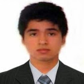

ANDRES TUANAMA
Mi nombre es Andres Tuanama, naci en Setiembre del '92, soy peruano y por ahora vivo en el distrito de Ate-vitarte, Lima. Actualmente,soy estudiante de Ingenieria Industrial de UTEC (Universidad de Ingenieria y Tecnologia) perteneciente al quinto superior con cualidades de disciplina, análisis crítico, buen trato y facilidad para trabajar en equipo. Con experiencia en ingeniería de métodos y distribución de planta e interesado en el mejoramiento de procesos de producción y gestión de la calidad.. En mis tiempos libre me gusta jugar videojuegos y salir a caminar, ademas de jugar con mis mascotas.